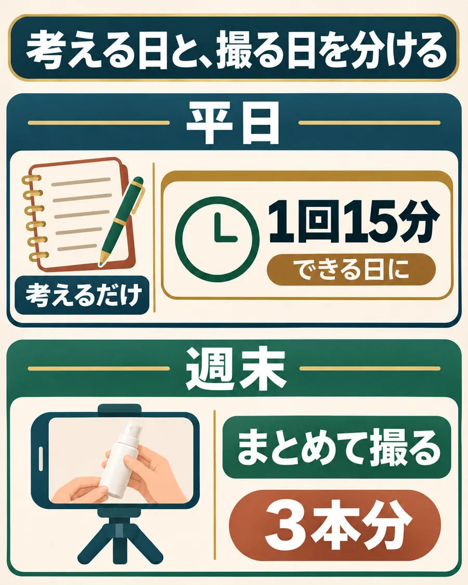

裏ワザは、「考える日」と「撮る日」を分けること。
仕事のあとに時間が溶けるのって、調べる・考える・撮る・編集するを、毎回いっぺんにやろうとするからなんですよね。
疲れた頭で「今日は何から？」って考えているうちに、1日が終わってしまう。

- 平日は「考えるだけ」：15分で、商品ページを読む日、4場面の原稿を書く日に分ける。疲れていても終わる量にする。
- 週末に「まとめて撮る」：原稿がそろっていれば、撮影は迷わない。同じ商品なら、最初の一言だけ変えた3本分を一度に撮れる。
- 型は使い回す：「止める・売りを言う・見せる・案内する」の4場面の型が決まっていれば、商品を替えるだけで次の原稿になる。
月113万円を出した実績者も、会社員のまま。仕事のあとに2本作って、翌日の昼と夜に投稿していたそうです。
僕も同じで、やれるところを少しずつ進めて、撮るときはまとめて撮っています。
時間を増やすんじゃなくて、毎回ゼロから考えなくていい仕組みにする。それが「仕込み」です。
平日に仕込むのは、4場面の「原稿」と「映すもの」。
週末に撮る前に、この2つだけそろえておけば大丈夫です。作例はミスト化粧水です。
- 1止める
「メイクしたまま、昼に乾燥が気になったことありませんか？」
映すもの：昼のデスクで、手鏡をのぞく手元。 - 2売りを言う
「このミスト、メイクの上からそのまま使えるんです。」
映すもの：商品ページの「メイクの上から使える」の表示。 - 3見せる
「80ml入りです。顔から20cmくらい離して、シュッと吹きかけます。」
映すもの：容量の表示と、吹きかける手元。 - 4案内する
「値段と詳しい使い方は、リンク先の商品ページで見てください。」
映すもの：自分の紹介リンクから開いた商品ページ。
字幕は、この原稿と同じ文を読み切れる長さに分けて、商品や手元を隠さない位置に入れます。
この4場面がそろっていれば、週末は撮るだけ。字幕入れを人に頼むときも、同じ原稿を渡せばそのまま伝わります。
まだ次の作業が決まっていない人へ
まずは、使える一枠で終わる作業を一つだけ決めてください。
- 使える時間
- 月曜に15分。
- その時間で終えること
- ミストの商品ページを読み、売りを一つと、使い方・容量をメモする。
- 次回開くものと、最初にすること
- メモを開き、最初の一言を3パターン書く。
週に何回か作業できる人の予定例
次回の作業を、迷わず始められるようにする。
合計85分の予定例です。一回で全部進めようとせず、調べる日、原稿を書く日、撮って並べる日を分けているのがポイントです。
一つの予定と、次の始め方を残す
編集を人へ頼むときの準備（任意）
安く頼めても、説明と手直しで夜が終わることがある。
編集してほしい範囲と仕上がりを一緒に確認。
質問に答え、仕上がりを見て修正を頼む。
字幕の見本と、頼む作業の範囲を確認。
自分は目的と仕上がりの確認に集中。
頼む相手は、料金だけでなく、自分が説明や修正に使える時間も合わせて決めます。
説明の時間が取れないなら、似た動画の編集例を見せてもらって、どこまで任せられるか確かめる。
「いい感じに」から、迷わず着手できる依頼へ。
ミストの紹介動画に、字幕を入れてもらう例です。
上の4場面を渡して字幕入れだけを頼む場合の依頼文です。実際に撮った映像と、自分の原稿に替えて使ってください。
字幕を頼むときの依頼文
【ミスト化粧水の字幕入れをお願いします】 お願いする作業は、次の4行を、対応する映像に字幕として入れることです。 1「メイクしたまま、昼に乾燥が気になったことありませんか？」／昼のデスクで、手鏡をのぞく手元。 2「このミスト、メイクの上からそのまま使えるんです。」／商品ページの「メイクの上から使える」の表示。 3「80ml入りです。顔から20cmくらい離して、シュッと吹きかけます。」／容量の表示と、吹きかける手元。 4「値段と詳しい使い方は、リンク先の商品ページで見てください。」／自分の紹介リンクから開いた商品ページ。 セリフと順番はそのままにしてください。商品について確認していない説明は足さないでください。 原稿、セリフ順に並べた4本の映像、字幕の見本を添えます。見本の文字サイズを参考にし、ミストを吹きかける手元と商品の表示を字幕で隠さないでください。 受け取りたいのは、確認用動画と、後から字幕を直せる編集データです。対応できる形式と納期は、作業を始める前に相談します。 受け取ったら、原稿どおりの言葉か、字幕と映像が合うか、商品の表示が見えるかを確認します。 判断に迷う箇所は、作業を始める前に質問してください。
作業を止める前に残す一文
「次は動画を作る」より、「水曜はメモを開いて、最初の一言を3パターン書く」。ここまで書くと、次に座ったときすぐ始められます。
次にやる作業を一つ決めて、開くものと最初にやることまでメモしておく。これだけで、仕事のあとでも迷わず始められます。